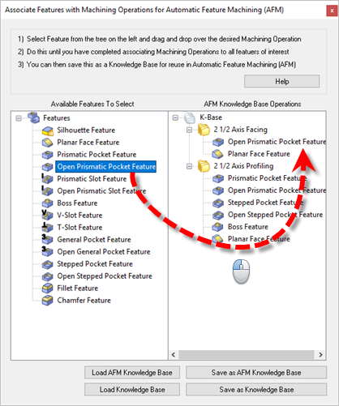

Select this icon to setup an Automatic Feature Machining (AFM) Knowledge Base. For example you can load an exiting Knowledge Base into the dialog shown below and then assign feature types to machining operations in the Knowledge Base and then save it. This provides an additional level of CAM automation to part files that share similar features and toolpath operations. Refer to the dialog and basic procedure listed below.
Select this icon to setup an Automatic Feature Machining (AFM) Knowledge Base. For example you can load an exiting Knowledge Base into the dialog shown below and then assign feature types to machining operations in the Knowledge Base and then save it. This provides an additional level of CAM automation to part files that share similar features and toolpath operations. Refer to the dialog and basic procedure listed below.
The dialog is divided into two sections. The left side contains the list of available Milling Features. The right side contains the operations currently defined in your Knowledge Base.  Dialog Box: Associate Features with Machining Operations for Automatic Feature Machining (AFM) Load AFM Knowledge Base Select this button to load the Default (AFM) Knowledge Base file into the dialog. This file is defined in the Features section of the CAM Preferences dialog. Save as AFM Knowledge Base Select this button to Save the currently loaded Default (AFM) Knowledge Base file. Load Knowledge Base Select this button to load an exiting Knowledge Base. The File Browser will display. Locate and select the Knowledge Base file (*.vkb) that you have saved and then pick Open. You can load either a Knowledge Base file (that uses Geometry based rules) or an AFM Knowledge Base file (that uses Feature based rules). Save as Knowledge Base Select this button to save the currently loaded Knowledge Base under a different name. The File Browser will display. Pick a location, enter a file name for the (*.vkb) and pick Save. |
Follow the procedure below to assign machining Features to operations in your Knowledge Base: 1.You must first have an existing Knowledge Base of toolpath operations. Refer to the Knowledge Base related help topics for creating Knowledge Bases. 2.Select one of the Load Knowledge Base buttons. You will see all of the toolpath operations in your Knowledge Base listed on the right side of the dialog. 3.Select a Feature type from the left side of the dialog and Drag it over and Drop it into the folder of the operation in your Knowledge Base. Left-Click+Hold to Drag a Feature type. 4.Repeat the procedure for each Feature type you wish to assign. 5.When done, select the Save as AFM Knowledge Base button to update your default Knowledge Base file. Select Save as Knowledge Base to save it to a new name. |
Here is some additional information about Feature Knowledge Bases: 1.You must first have an existing Knowledge Base of toolpath operations. Refer to the Knowledge Base related help topics for creating Knowledge Bases. 2.The Selection Rules for the toolpath operations in your Knowledge Base will be set to Features. To change it to Geometry rules, load the Knowledge Base into the K-Bases tab and edit the Selection Rules for the operation and then save the Knowledge Base.
|